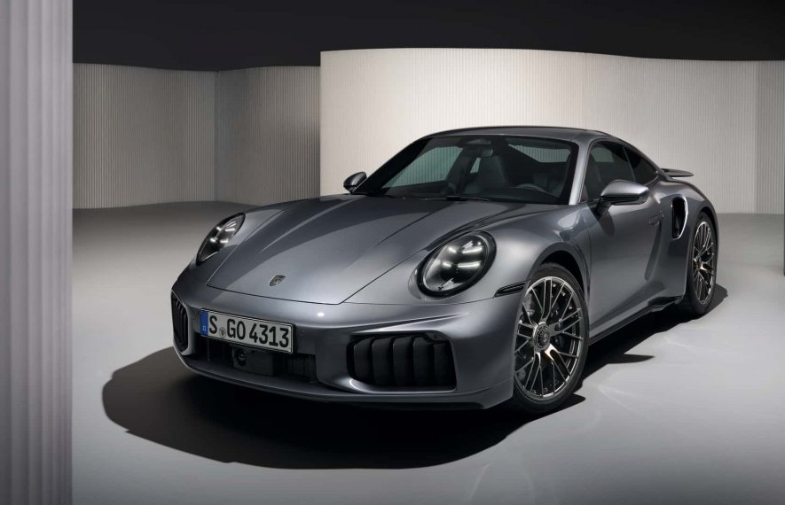

Porsche 911 — ორკარიანი 2+2 მაღალი წარმადობის უკანა ძრავით აღჭურვილი სპორტული ავტომობილი, რომელიც წარადგინეს 1964 წლის სექტემბერში, შტუტგარტში, გერმანია. მას აქვს უკან დამონტაჟებული ექვსცილინდრიანი ოპოზიტური ძრავა და ორიგინალი გრეხითი (ტორსიონული) საკიდარი. მანქანა მუდმივად იხვეწებოდა წლების განმავლობაში, მაგრამ ძირითადი კონცეფცია უცვლელი დარჩა.[1] ძრავებს ჰაერის გაგრილების სისტემა ჰქონდა 1998 წლამდე.[2]
